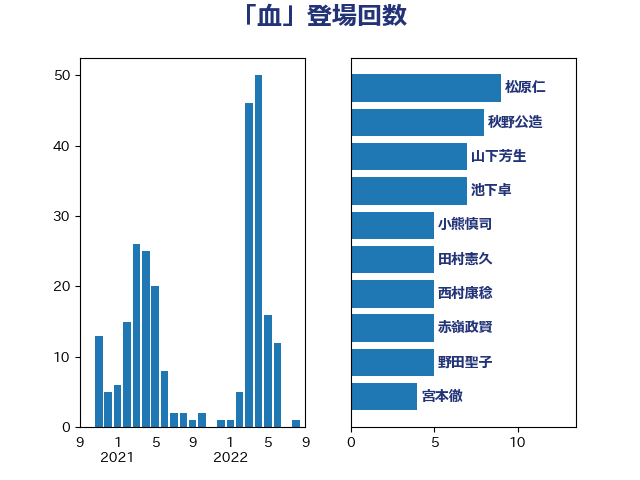

単語「血」

| 松原仁 | 立憲民主党 | 9 回 |
| 秋野公造 | 公明党 | 8 回 |
| 山下芳生 | 日本共産党 | 7 回 |
| 池下卓 | 日本維新の会 | 7 回 |
| 小熊慎司 | 立憲民主党 | 5 回 |
| 田村憲久 | 自由民主党 | 5 回 |
| 西村康稔 | 自由民主党 | 5 回 |
| 赤嶺政賢 | 日本共産党 | 5 回 |
| 野田聖子 | 自由民主党 | 5 回 |
| 宮本徹 | 日本共産党 | 4 回 |
| 末松義規 | 立憲民主党 | 4 回 |
| 本村伸子 | 日本共産党 | 4 回 |
| 梅村みずほ | 日本維新の会 | 4 回 |
| 上川陽子 | 自由民主党 | 3 回 |
| 伊波洋一 | 無所属 | 3 回 |
| 岸田文雄 | 自由民主党 | 3 回 |
| 川田龍平 | 立憲民主党 | 3 回 |
| 新垣邦男 | 立憲民主党 | 3 回 |
| 櫻井周 | 立憲民主党 | 3 回 |
| 石川大我 | 立憲民主党 | 3 回 |
| 礒崎哲史 | 国民民主党 | 3 回 |
| 近藤和也 | 立憲民主党 | 3 回 |
| 麻生太郎 | 自由民主党 | 3 回 |
| 伊佐進一 | 公明党 | 2 回 |
| 佐藤正久 | 自由民主党 | 2 回 |
| 勝部賢志 | 立憲民主党 | 2 回 |
| 吉田統彦 | 立憲民主党 | 2 回 |
| 堀内詔子 | 自由民主党 | 2 回 |
| 大石あきこ | れいわ新選組 | 2 回 |
| 小西洋之 | 立憲民主党 | 2 回 |
| 山本博司 | 公明党 | 2 回 |
| 志位和夫 | 日本共産党 | 2 回 |
| 矢倉克夫 | 公明党 | 2 回 |
| 石井苗子 | 日本維新の会 | 2 回 |
| 福島伸享 | 無所属 | 2 回 |
| 自見はなこ | 自由民主党 | 2 回 |
| 赤羽一嘉 | 公明党 | 2 回 |
| 野田佳彦 | 立憲民主党 | 2 回 |
| 高野光二郎 | 自由民主党 | 2 回 |
| 中島克仁 | 立憲民主党 | 1 回 |
| 中西祐介 | 自由民主党 | 1 回 |
| 井上哲士 | 日本共産党 | 1 回 |
| 仁木博文 | 無所属 | 1 回 |
| 伊藤孝恵 | 国民民主党 | 1 回 |
| 伴野豊 | 立憲民主党 | 1 回 |
| 倉林明子 | 日本共産党 | 1 回 |
| 古屋範子 | 公明党 | 1 回 |
| 古川俊治 | 自由民主党 | 1 回 |
| 吉良州司 | 無所属 | 1 回 |
| 大串博志 | 立憲民主党 | 1 回 |
| 室井邦彦 | 日本維新の会 | 1 回 |
| 小池晃 | 日本共産党 | 1 回 |
| 小泉進次郎 | 自由民主党 | 1 回 |
| 小野泰輔 | 日本維新の会 | 1 回 |
| 尾辻秀久 | 無所属 | 1 回 |
| 山田賢司 | 自由民主党 | 1 回 |
| 山際大志郎 | 自由民主党 | 1 回 |
| 岩渕友 | 日本共産党 | 1 回 |
| 平山佐知子 | 無所属 | 1 回 |
| 後藤茂之 | 自由民主党 | 1 回 |
| 徳永久志 | 立憲民主党 | 1 回 |
| 打越さく良 | 立憲民主党 | 1 回 |
| 本庄知史 | 立憲民主党 | 1 回 |
| 杉尾秀哉 | 立憲民主党 | 1 回 |
| 杉田水脈 | 自由民主党 | 1 回 |
| 松山政司 | 自由民主党 | 1 回 |
| 林芳正 | 自由民主党 | 1 回 |
| 柳ヶ瀬裕文 | 日本維新の会 | 1 回 |
| 森まさこ | 自由民主党 | 1 回 |
| 森屋隆 | 立憲民主党 | 1 回 |
| 江田憲司 | 立憲民主党 | 1 回 |
| 浅田均 | 日本維新の会 | 1 回 |
| 熊谷裕人 | 立憲民主党 | 1 回 |
| 田村智子 | 日本共産党 | 1 回 |
| 福島みずほ | 社会民主党 | 1 回 |
| 福田昭夫 | 立憲民主党 | 1 回 |
| 稲津久 | 公明党 | 1 回 |
| 笠井亮 | 日本共産党 | 1 回 |
| 美延映夫 | 日本維新の会 | 1 回 |
| 羽田次郎 | 立憲民主党 | 1 回 |
| 舞立昇治 | 自由民主党 | 1 回 |
| 菅義偉 | 自由民主党 | 1 回 |
| 逢坂誠二 | 立憲民主党 | 1 回 |
| 階猛 | 立憲民主党 | 1 回 |
| 青柳仁士 | 日本維新の会 | 1 回 |
| 齋藤健 | 自由民主党 | 1 回 |